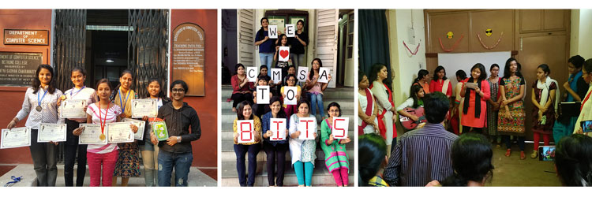
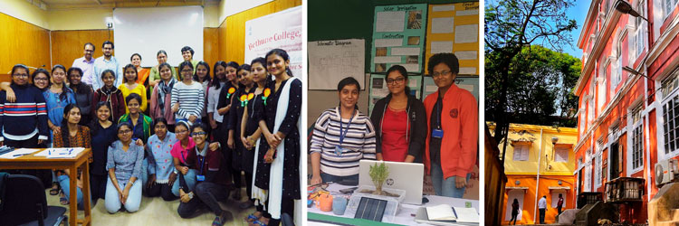
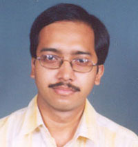
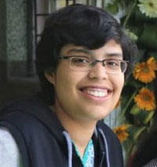
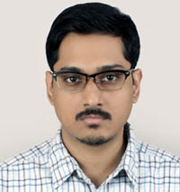
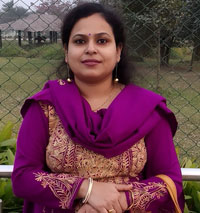
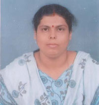
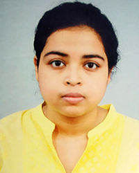

Department of Computer Science
"Computer Science is no more about computers than astronomy is about telescope"
--- Edgar W. Dijkstra.
|  |
|  |
About the Department
Bethune College was the first government college in West Bengal that started offering an undergraduate honours degree course in Computer Science, about five years after the University of Calcutta started this course in the general stream, to meet the rising demand in the IT industry of our country. The department was officially inaugurated in the year 2002 and almost every year since its inception it has produced multiple university rank holders, making the department a worthy contender in the race for academic excellence. Over time, slowly but surely the department has cemented its position as the most sought-after department to be studying Computer Science, under the University of Calcutta.
A very healthy student teacher ratio of about 14:1, and the much-needed personal attention, ensured through a specialized mentorship programme launched in the year 2015, remain our biggest strength in achieving the many academic laurels. Our department happens to be one of the youngest departments in this college of more than 140 years old, which has an unquestionably rich academic heritage. Keeping this vast history in mind, it might seem that we lack in age and insight, but then we more than makeup with our complete heart and soul, making the department an extremely close-knit family
Faculty
|  | Sri. Krishanu Naskar Assistant Professor and HOD M.C.A |
 | Smt. Srijoni Maitra Assistant Professor M.Sc.,M.Tech |
 | Sri. Abhishek Dey Assistant Professor M.Sc.,M.Tech |
|  | Smt. Dipanwita Chakraborty Bhattacharya Assistant Professor M.Sc.,M.Tech(on study leave) |
 | Smt. Tayaniki Mukherjee State Aided College Teacher II M.Sc.,M.Tech |
 | Ms. Ankita Sarkar Tarak Sudha Fellow M.A.,B.Ed.,Ph.D. |
Infrastructure
The department is suitably equipped to meet the demands of the University of Calcutta undergraduate course.